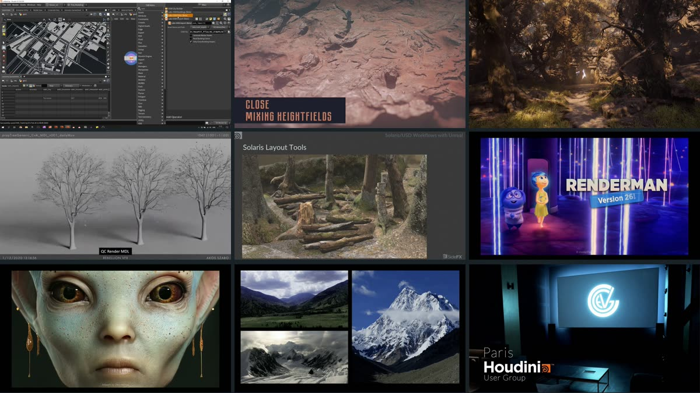
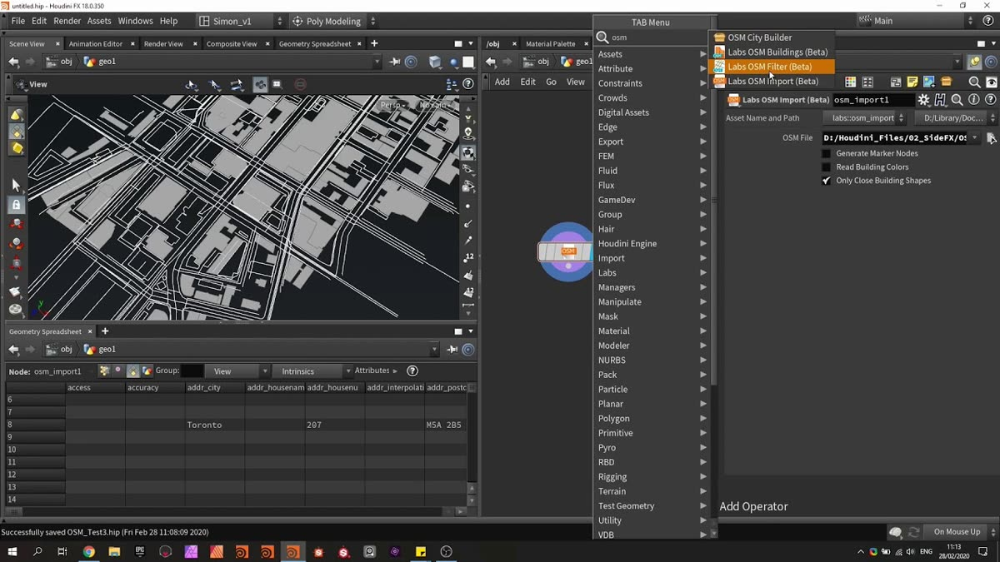
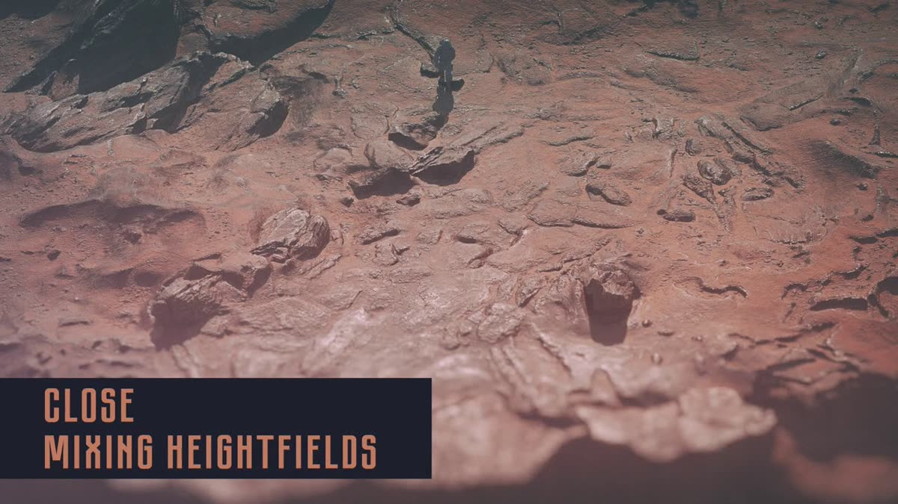
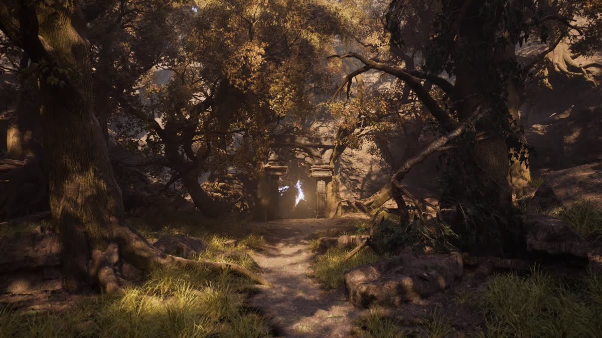
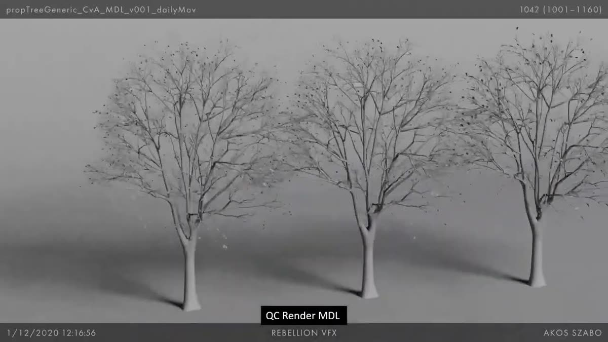
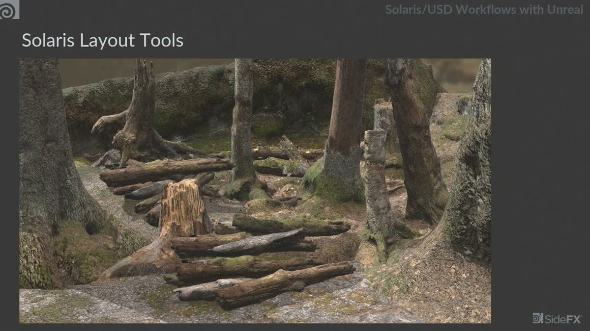
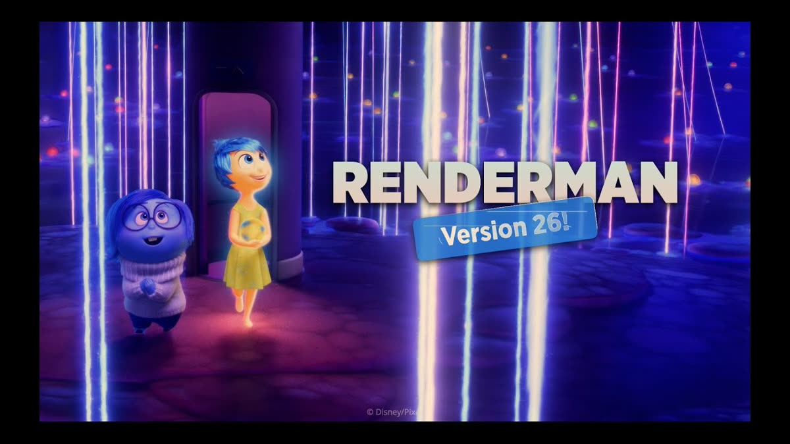
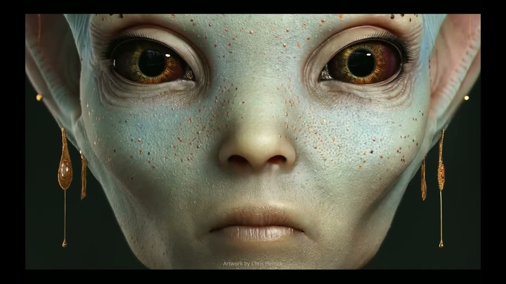
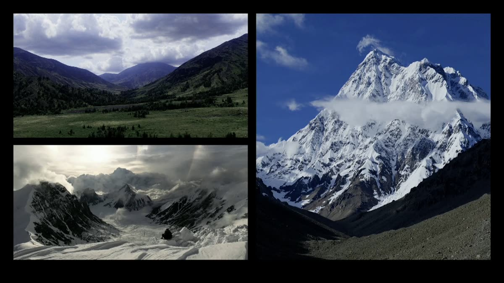
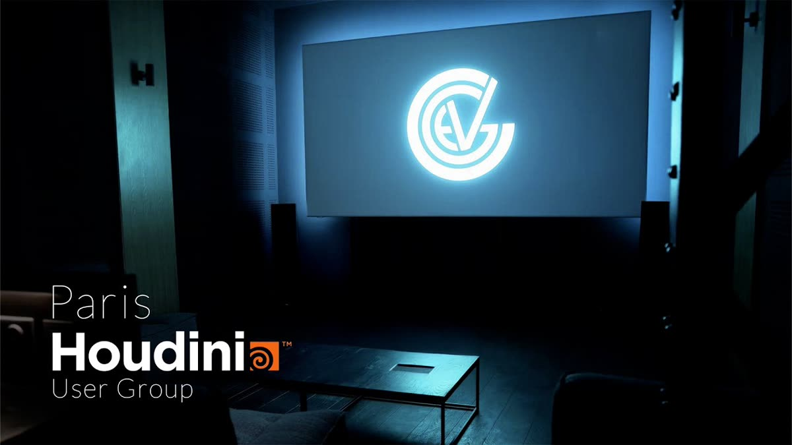

SideFX公式チャンネルから、OSMを使った都市生成や火星地形の制作といった背景系と、Houdini HIVEでのUSD/Solarisパイプライン講演をまとめた9本。

City Building with OSM Data | Part 1 — OSMデータの準備（4:38）
https://www.youtube.com/watch?v=8YDWj0-QFVQ

Crafting Terrains for The Dawning | Nikola Damjanov — 火星地形のブレイクダウン（24:29）
https://www.youtube.com/watch?v=YE4efg_k-rM

Project Elderwood — HoudiniとUnrealのワールド構築（3:57）
https://www.youtube.com/watch?v=aKRkIIyhrbE

LOPs of love from the USD pipeline at Rebellion | FMX HIVE 2022 — 実制作のUSDパイプライン（54:57）
https://www.youtube.com/watch?v=L9pMvbET7YU

Solaris/USD Workflows with Unreal | Peter Arcara — Component BuilderとUnreal連携（27:53）
https://www.youtube.com/watch?v=w2Knw9bD06Y

RenderMan: The Latest and Greatest from Pixar | FMX HIVE 2024（28:02）
https://www.youtube.com/watch?v=_YrNHJk3f90

Artist Workflows for USD, Solaris & RenderMan XPU | FMX HIVE 2025（50:15）
https://www.youtube.com/watch?v=biQlPL8_uu4

Everything Is a Simulation | Paul Esteves | OFFF HIVE 2026（34:33）
https://www.youtube.com/watch?v=Wz80-imjLbQ

Solaris as a bridge — ジェネラリストをHoudiniに引き込む（36:34）
https://www.youtube.com/watch?v=SyPE2bRMO8E